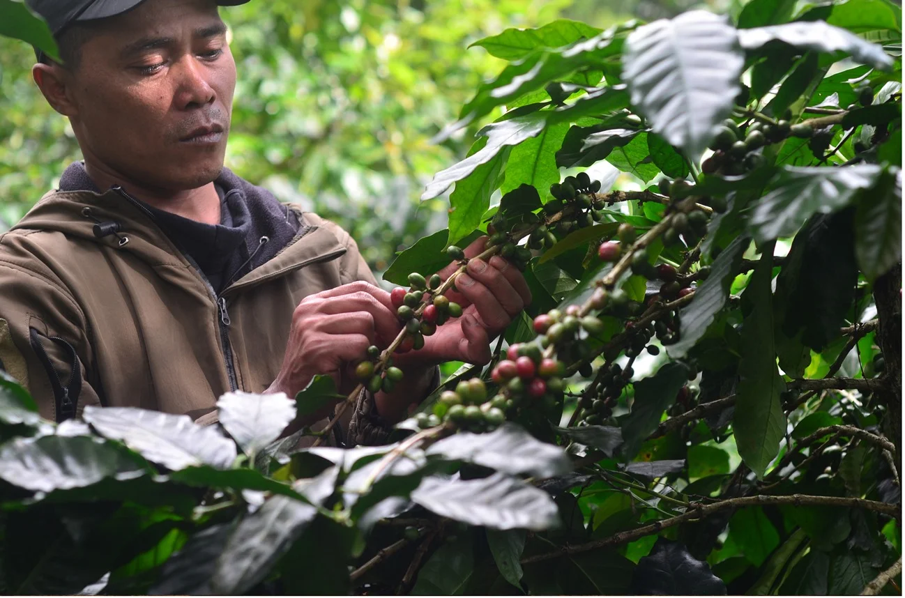

Kang Yono & Petani Konservasi
Sosok di balik perawatan kebun kopi konservasi Cibulao
Kopi Cibulao
“Mahakarya Alam Jawa Barat, Saksi Perjalanan Konservasi Hutan Cisarua”
Di lereng hijau Puncak, Bogor, Jawa Barat, tersimpan rahasia terbaik alam. Terhindar dari hingar-bingar kota bogor, lahir sebuah entitas kopi yang mendefinisikan makna konservasi dan kesejahteraan . Ini adalah kisah tentang Kopi Cibulao yang bukan hanya sekadar minuman penghalau kantuk, melainkan sebuah manifestasi dari harmoni antara manusia dan alam, dedikasi terhadap konservasi, dan pencapaian cita rasa tertinggi.
Galeri Perjalanan Kopi Cibulao
Dokumentasi dari kebun, proses pasca-panen, hingga sortasi kualitas terbaik
Kang Yono & Petani Konservasi
Sosok di balik perawatan kebun kopi konservasi Cibulao
Pemetikan Ceri Merah
Hanya memanen ceri kopi pada kematangan merah sempurna
Penjemuran Pasca-Panen
Proses pengeringan alami di bawah sinar matahari

Sortir Ketat & Grading
Pengelompokan mutu dan grading kualitas spesialti

Hasil Siap Distribusi
Biji kopi pilihan yang dikemas dan siap disajikan
Harmoni Konservasi
Kisah Kopi Cibulao adalah kisah tentang penyelamatan ekosistem. Lahir dari inisiatif untuk memulihkan kawasan tangkapan air (hulu Sungai Ciliwung) yang sempat terancam kritis, Kopi Cibulao dibesarkan melalui pendekatan Agroforestry..
Pohon-pohon kopi Cibulao ditanam berdampingan dengan pepohonan hutan endemik. Metode shade-grown (tumbuh di bawah naungan) ini membuat ceri kopi matang lebih lambat, menyerap lebih banyak nutrisi dari tanah hutan yang kaya, dan menghasilkan profil rasa yang kompleks.
Setiap pohon kopi yang ditanam berfungsi sebagai penahan erosi dan penjaga debit air hulu Ciliwung. Menikmati secangkir Kopi Cibulao berarti Anda turut serta memastikan jutaan liter air bersih tetap mengalir untuk generasi mendatang.
Kualitas Spesialti Kopi Cibulao yang Ditawarkan
Status premium Kopi Cibulao bukanlah sekadar klaim sepihak, melainkan fakta yang telah diuji.
Berkat ketelitian para petani lokal yang memanen ceri kopi hanya pada tingkat kematangan merah sempurna (red cherry picking) dan proses pasca-panen yang ketat, Kopi Cibulao berhasil mencuri perhatian dunia kopi Nusantara. Kopi Robusta Cibulao pernah dinobatkan sebagai Juara Nasional dalam Kontes Kopi Spesialti Indonesia (KKSI).
Cita rasanya menawarkan dimensi baru: keasaman yang elegan, body yang tebal, dengan jejak aroma fruity, cokelat, dan karamel yang hanya bisa dibentuk oleh tanah vulkanis Jawa Barat yang subur.
Kuantitas Kopi Cibulao yang Alami
Berbeda dengan kopi curah yang mengutamakan hasil panen melimpah, Kopi Cibulao memiliki filosofi yaitu kami tetap menjaga menentukan batasan berlandaskan kelestarian alam, bukan ambisi industri yang terlalu cepat. Hal ini karena:
Luasan Terbatas
Luasan terbatas karena ditanam tepat di batas pelindung hutan, area tanam Kopi Cibulao sangat dibatasi untuk memastikan ekosistem hutan tidak terganggu.
Seleksi Ketat
Seleksi Ketat yang mana Hanya ceri kopi dengan kualitas paling atas yang berhak membawa nama Kopi Cibulao.
Siklus Alami
Siklus Alami, Tanpa pupuk kimia atau pestisida sintetis yang memaksa pohon berbuah di luar batas wajarnya. Semua berjalan mengikuti siklus alam, membuat hasil panennya menjadi lebih terjaga setiap tahunnya.
Sebuah Undangan untuk Menikmati Hasil Alami dengan Kualitas
Kopi Cibulao adalah representasi premium dari kopi Specialty arabica dan Fine Robusta khas Jawa Barat. Ini adalah kopi bagi para penikmat sejati yang memahami bahwa kenikmatan sejati terletak pada kemurnian alam, kelestarian bumi, dan proses panjang penuh cinta di balik setiap tetesnya.
“Kopi Cibulao: Dirawat oleh hutan, dipanen dengan kebanggaan, dan diseduh untuk kesempurnaan.”
“Jadilah segelintir orang yang beruntung menikmati mahakarya konservasi ini. Karena kuantitas kami terbatas, namun komitmen kami pada kualitas tak terbatas.”